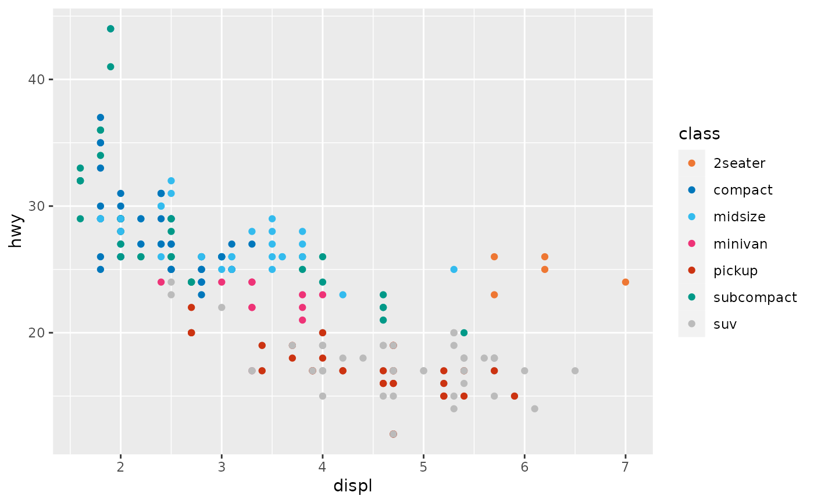
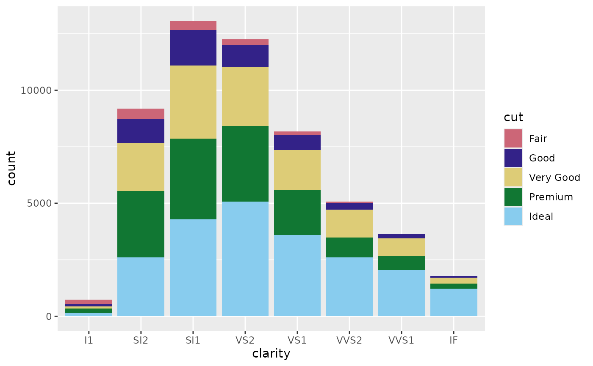
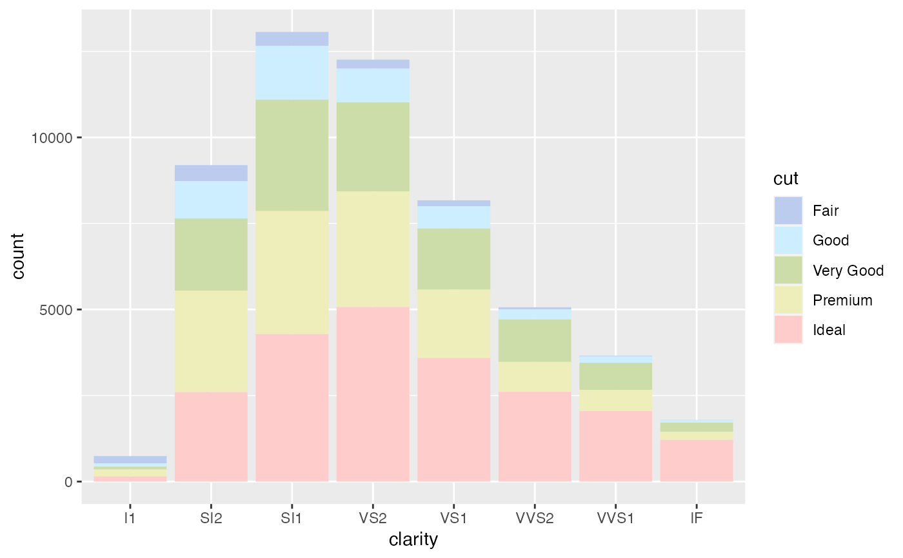
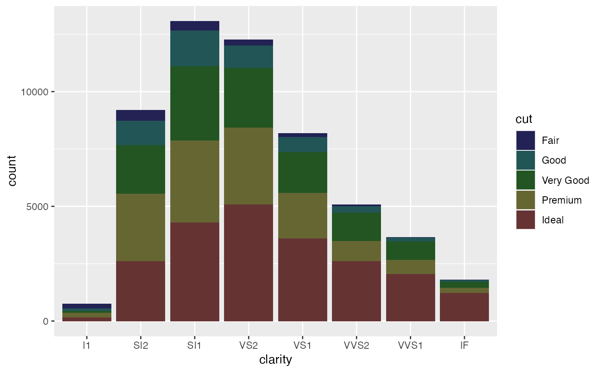
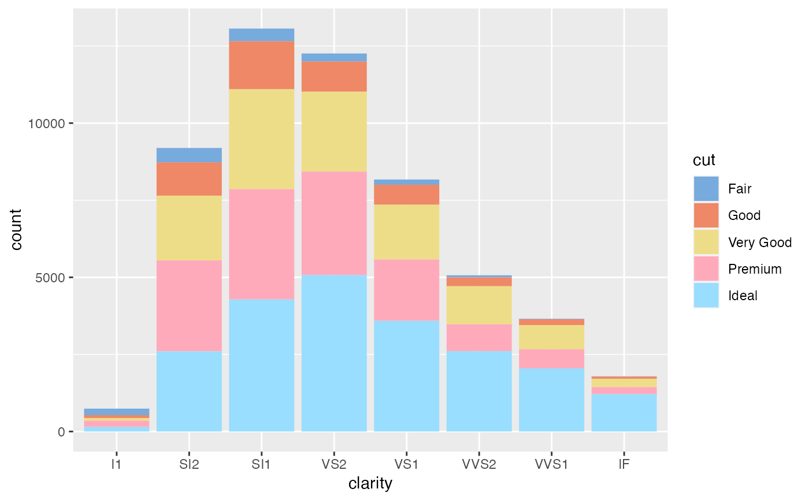

Provides qualitative colour scales from Paul Tol's Colour Schemes.
scale_colour_bright(..., reverse = FALSE, aesthetics = "colour")
scale_color_bright(..., reverse = FALSE, aesthetics = "colour")
scale_fill_bright(..., reverse = FALSE, aesthetics = "fill")
scale_colour_contrast(..., reverse = FALSE, aesthetics = "colour")
scale_color_contrast(..., reverse = FALSE, aesthetics = "colour")
scale_fill_contrast(..., reverse = FALSE, aesthetics = "fill")
scale_colour_highcontrast(..., reverse = FALSE, aesthetics = "colour")
scale_color_highcontrast(..., reverse = FALSE, aesthetics = "colour")
scale_fill_highcontrast(..., reverse = FALSE, aesthetics = "fill")
scale_colour_vibrant(..., reverse = FALSE, aesthetics = "colour")
scale_color_vibrant(..., reverse = FALSE, aesthetics = "colour")
scale_fill_vibrant(..., reverse = FALSE, aesthetics = "fill")
scale_colour_muted(..., reverse = FALSE, aesthetics = "colour")
scale_color_muted(..., reverse = FALSE, aesthetics = "colour")
scale_fill_muted(..., reverse = FALSE, aesthetics = "fill")
scale_colour_mediumcontrast(..., reverse = FALSE, aesthetics = "colour")
scale_color_mediumcontrast(..., reverse = FALSE, aesthetics = "colour")
scale_fill_mediumcontrast(..., reverse = FALSE, aesthetics = "fill")
scale_colour_pale(..., reverse = FALSE, aesthetics = "colour")
scale_color_pale(..., reverse = FALSE, aesthetics = "colour")
scale_fill_pale(..., reverse = FALSE, aesthetics = "fill")
scale_colour_dark(..., reverse = FALSE, aesthetics = "colour")
scale_color_dark(..., reverse = FALSE, aesthetics = "colour")
scale_fill_dark(..., reverse = FALSE, aesthetics = "fill")
scale_colour_light(..., reverse = FALSE, aesthetics = "colour")
scale_color_light(..., reverse = FALSE, aesthetics = "colour")
scale_fill_light(..., reverse = FALSE, aesthetics = "fill")Arguments
- ...
Arguments passed to
ggplot2::discrete_scale().- reverse
A
logicalscalar. Should the resulting vector of colors be reversed?- aesthetics
A
characterstring or vector of character strings listing the name(s) of the aesthetic(s) that this scale works with.
Value
A discrete scale.
Details
The qualitative colour schemes are used as given (no interpolation): colors are picked up to the maximum number of supported values.
| Palette | Max. |
bright | 7 |
high contrast | 3 |
vibrant | 7 |
muted | 9 |
medium contrast | 6 |
pale | 6 |
dark | 6 |
light | 9 |
Qualitative colour schemes
According to Paul Tol's technical note, the bright, high contrast,
vibrant and muted colour schemes are colourblind safe. The medium contrast colour scheme is designed for situations needing colour pairs.
The light colour scheme is reasonably distinct for both normal or
colourblind vision and is intended to fill labeled cells.
The pale and dark schemes are not very distinct in either normal or
colourblind vision and should be used as a text background or to highlight
a cell in a table.
Refer to the original document for details about the recommended uses (see references).
References
Tol, P. (2021). Colour Schemes. SRON. Technical Note No. SRON/EPS/TN/09-002, issue 3.2. URL: https://personal.sron.nl/~pault/data/colourschemes.pdf
See also
Other colour-blind safe colour schemes:
scale_crameri_cyclic,
scale_crameri_diverging,
scale_crameri_mutlisequential,
scale_crameri_sequential,
scale_okabeito_discrete,
scale_tol_diverging,
scale_tol_sequential
Other qualitative colour schemes:
scale_colour_land(),
scale_colour_soil(),
scale_colour_stratigraphy(),
scale_okabeito_discrete
Other Paul Tol's colour schemes:
scale_tol_diverging,
scale_tol_sequential
Author
N. Frerebeau
Examples
library(ggplot2)
ggplot2::ggplot(mpg, ggplot2::aes(displ, hwy, colour = class)) +
ggplot2::geom_point() +
scale_colour_bright()
 ggplot2::ggplot(mpg, ggplot2::aes(displ, hwy, colour = class)) +
ggplot2::geom_point() +
scale_colour_vibrant()
ggplot2::ggplot(mpg, ggplot2::aes(displ, hwy, colour = class)) +
ggplot2::geom_point() +
scale_colour_vibrant()

ggplot2::ggplot(diamonds, ggplot2::aes(clarity, fill = cut)) +
ggplot2::geom_bar() +
scale_fill_muted()

ggplot2::ggplot(diamonds, ggplot2::aes(clarity, fill = cut)) +
ggplot2::geom_bar() +
scale_fill_pale()

ggplot2::ggplot(diamonds, ggplot2::aes(clarity, fill = cut)) +
ggplot2::geom_bar() +
scale_fill_dark()

ggplot2::ggplot(diamonds, ggplot2::aes(clarity, fill = cut)) +
ggplot2::geom_bar() +
scale_fill_light()
